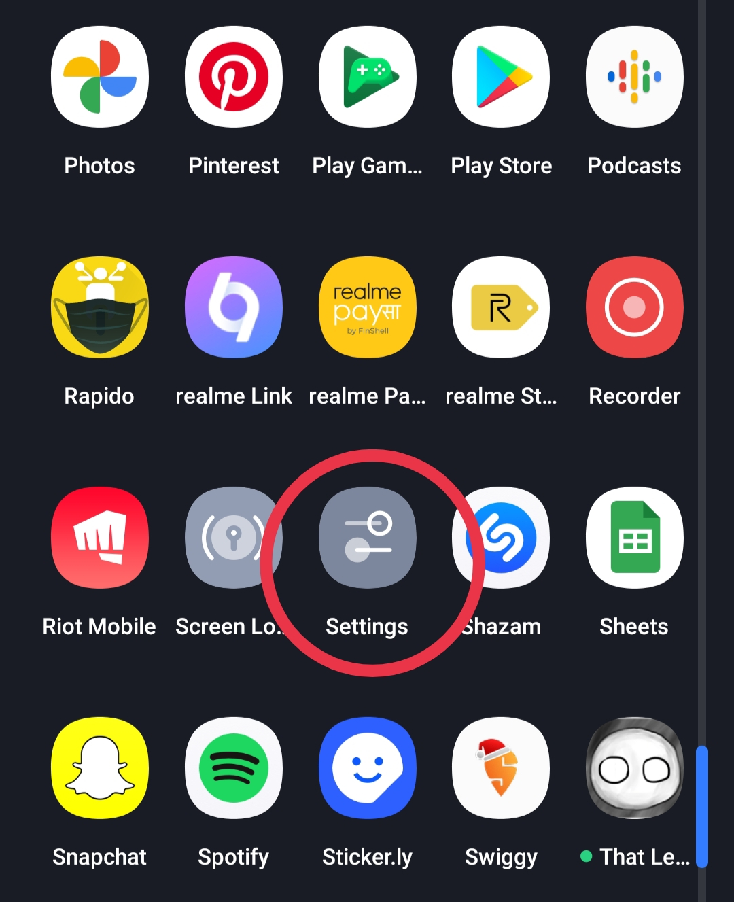
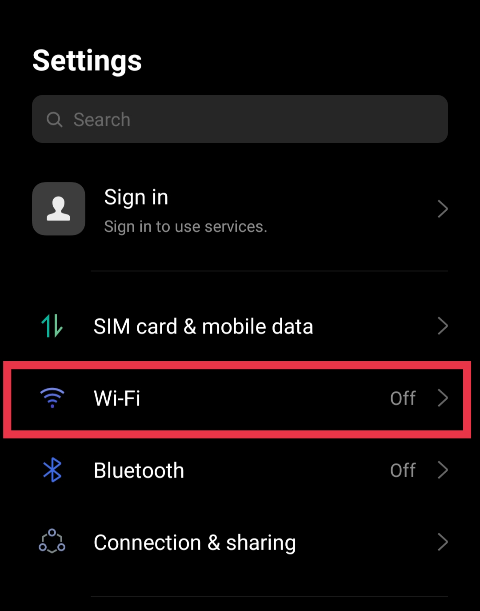
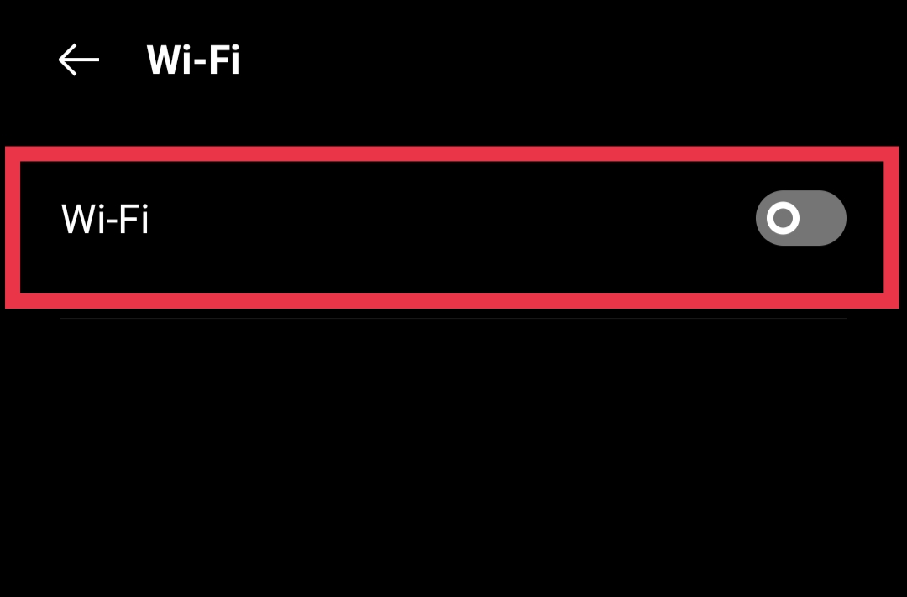
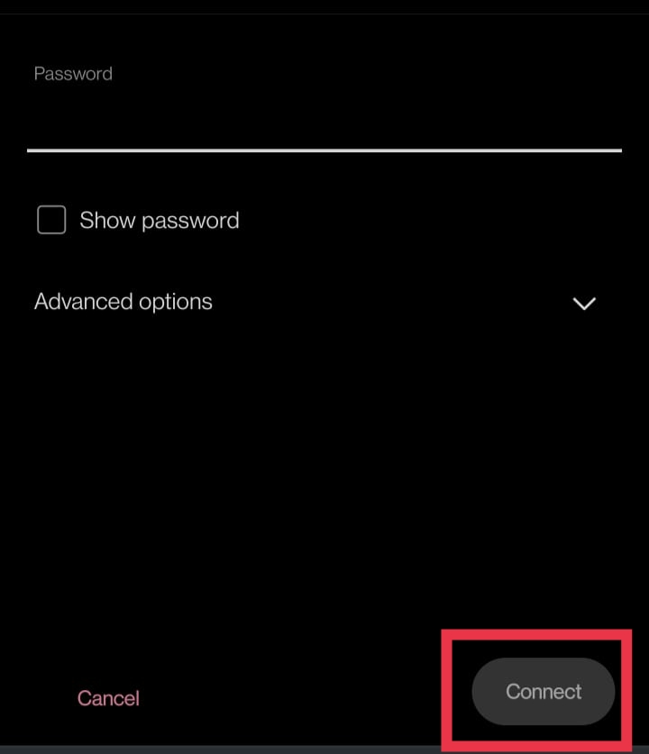
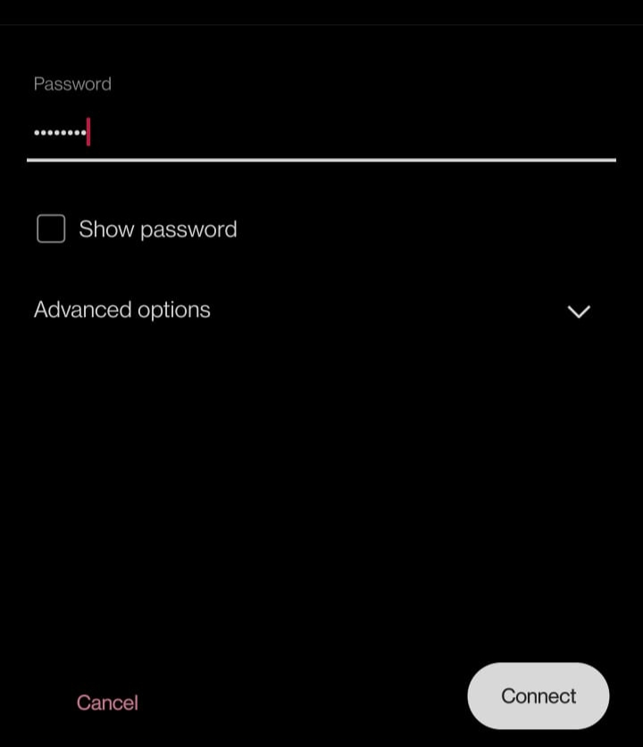

1. Open your Androids Settings
It is the gear-shape icon in your app drawer.
You can also get there on most models by swiping down from the top
of the home screen and tapping the gear at the top-right corner.

2. Select Wi-Fi option in settings menu.

3. Tap Wi-Fi. If Wi-Fi is enabled, your Android will begin scanning for networks to join.
If Wi-Fi is not enabled, tap the option to enable it now.
4. Tap a network. If the network is not password-protected, your phone will connect to it immediately. If a password is required, you'll have to enter it.
Password protected networks are indicated by a lock icon.
Tap the menu in the upper right and tap Add Network to manually enter a network name (SSID) if the network is hidden or you do not see it listed

5. Enter a password if prompted. If you tapped a network that
has a lock icon, type that network's password.

6. Tap connect. It's in the top-right corner. If the password is correct you will be connected to the network.